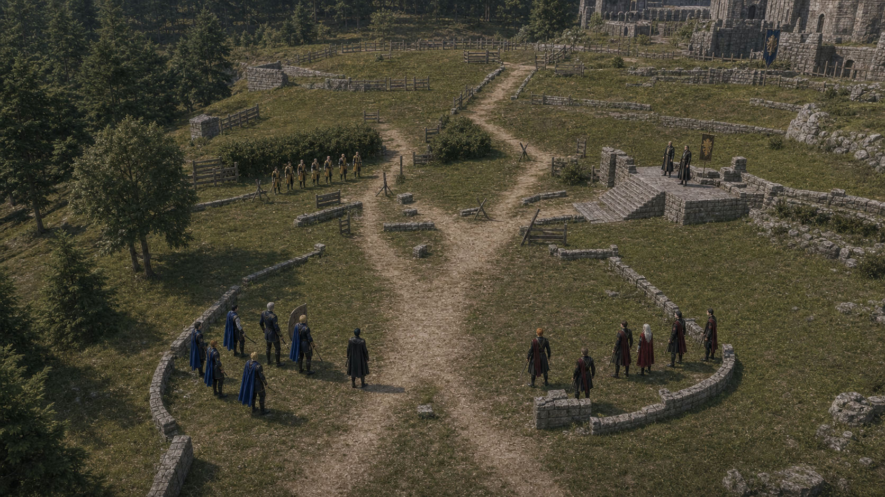
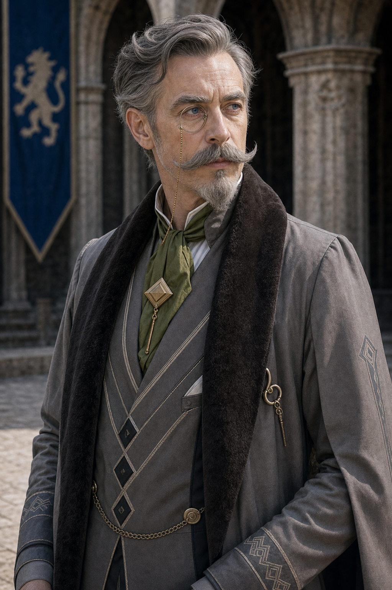
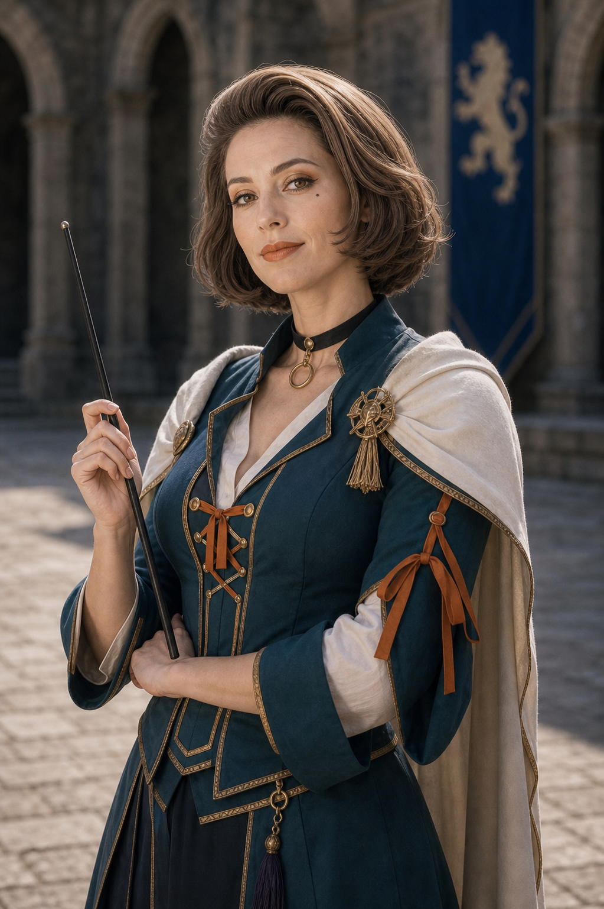

Shot025A keyframe
qa_passed / P1
episodes/EP02/generated/mock_battle_production_keyframes_2026-07-17/Shot025A_keyframe.png
qa_passed / P1
episodes/EP02/generated/mock_battle_production_keyframes_2026-07-17/Shot025A_keyframe.png
calm professor commander, continuity anchor between front and flank lines
assets/characters/protagonist/Byleth/professor/selected.png
youthful blond Blue Lions prince, training lance, aggressive but controlled
assets/characters/blue_lions/Dimitri/academy/selected.png
tall broad guardian, dark skin, white hair, shield-wall posture
assets/characters/blue_lions/Dedue/academy/selected.png
dark-blue-haired duelist, sharp side-cut tension, restrained from overextending
assets/characters/blue_lions/Felix/academy/selected.png
silver-haired Black Eagles leader, red cape and visible red pants, composed command
assets/characters/black_eagles/Edelgard/academy/selected.png
brown-haired Golden Deer leader, tactical smile, reads overextension from cover
assets/characters/golden_deer/Claude/academy/selected.png
older scholarly teacher, wind/Sagittae angle on raised heal-tile platform
assets/characters/church_of_seiros/Hanneman/academy/selected.png
beautiful adult former-opera-star teacher, white magic support near heal tile
assets/characters/church_of_seiros/Manuela/academy/selected.pngEstablish the exact geography for Canon 20x22 Field Map: high tactical establishing shot of one continuous mock battle map, southeast Blue Lions start, central outer choke, thicket flank, northeast heal tile platform.
episodes/EP02/generated/mock_battle_production_keyframes_2026-07-17/Shot025A_A_keyframe.png
Show the tactical peak with Byleth, Dimitri, Dedue, Felix, Edelgard using their locked character assets and academy costumes.
episodes/EP02/generated/mock_battle_production_keyframes_2026-07-17/Shot025A_B_keyframe.png
End on the reaction or reposition that motivates the next shot while preserving screen direction.
episodes/EP02/generated/mock_battle_production_keyframes_2026-07-17/Shot025A_C_keyframe.png